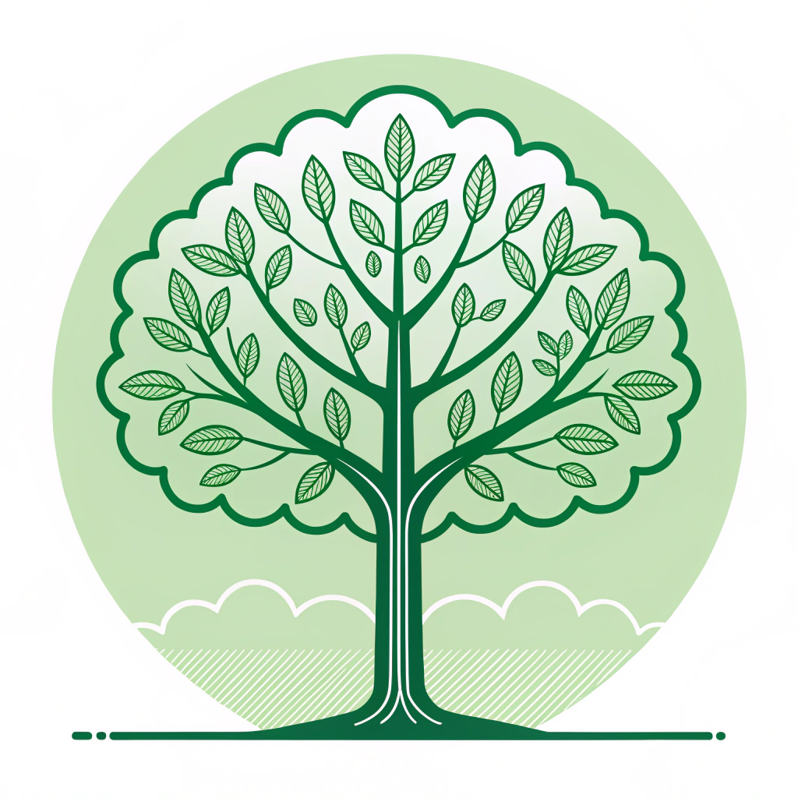
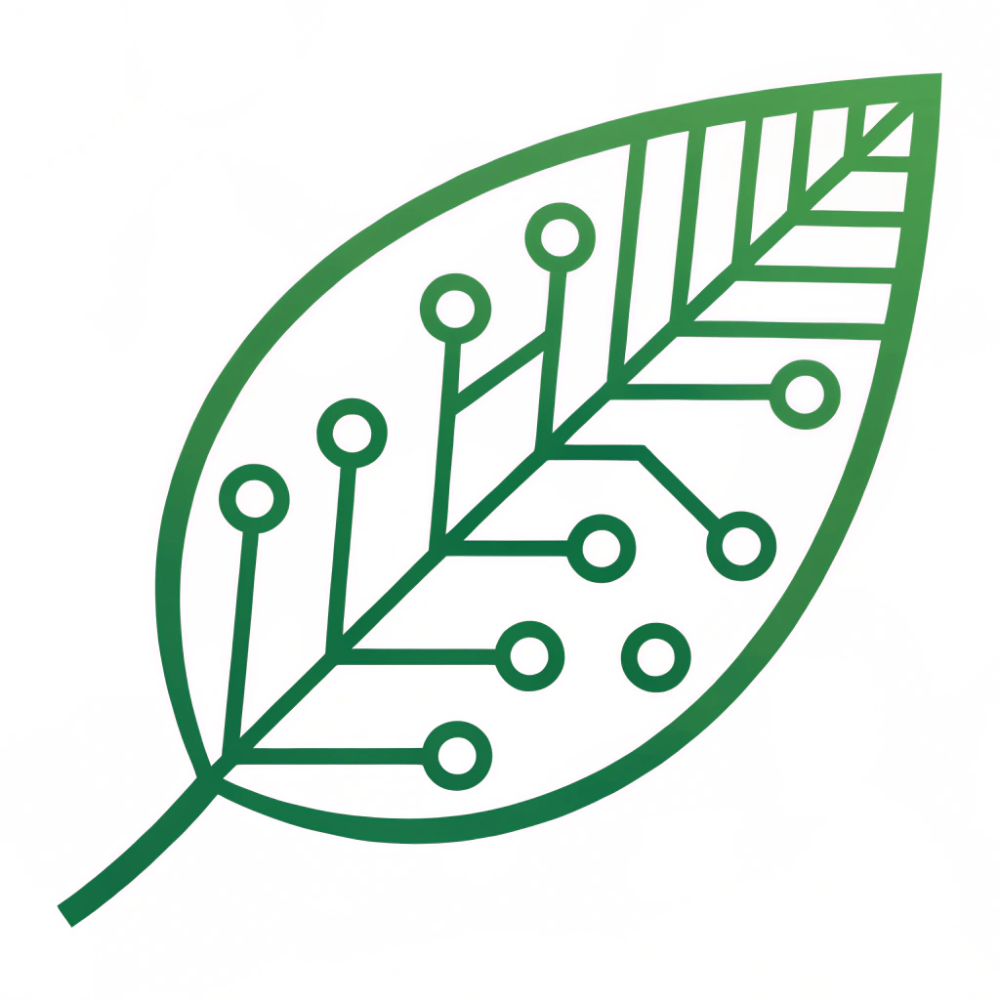
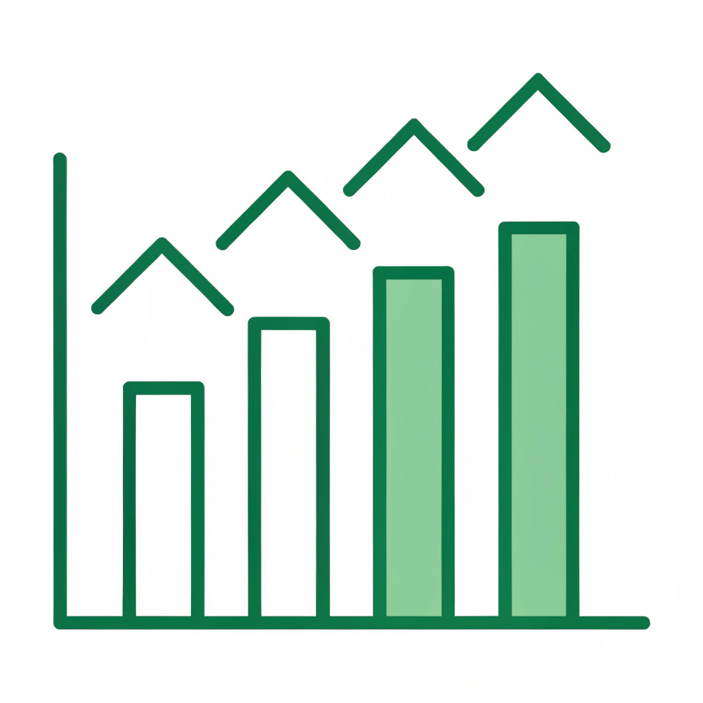
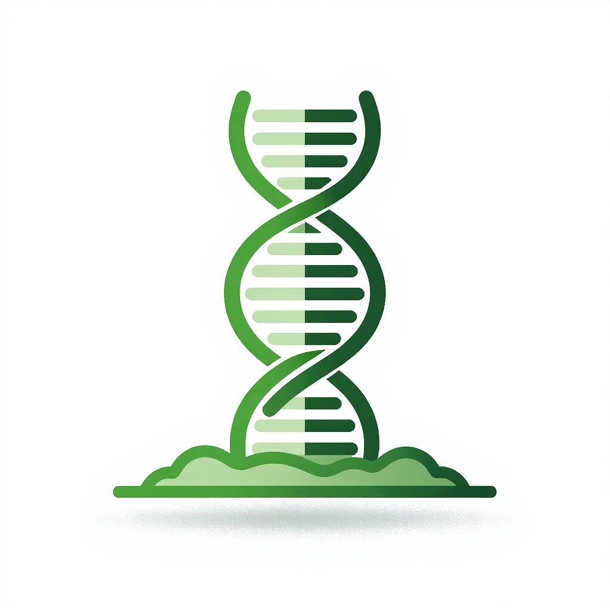

PRINCIPAIS FRENTES DE ATUAÇÃO

Consultoria Agronômica Avançada
Integramos análises de solo, indicadores bioquímicos e biotecnologia para elevar a saúde e a produtividade da sua lavoura.

Análise de Dados Multissetorial
Nossa expertise em estatística e machine learning transforma dados complexos em insights estratégicos para os setores do agro, saúde e meio ambiente.

P&D em Controle Biológico
Desenvolvemos produtos e processos inovadores para o controle de doenças em plantas em geral, visando uma agricultura mais sustentável.

Análise Metagenômica de Solos
Mapeamos a biodiversidade microbiana do seu solo para otimizar a saúde das plantas, o uso de fertilizantes e o manejo biológico.
NOSSOS NÚMEROS
2 Cases
Recursos Captados
(Projetos de Sucesso)
100% +
Feedbacks Positivos
(Clientes Satisfeitos)
+10 anos
Experiência de Colaboradores
(Equipe Multidisciplinar)
NOSSO COMPROMISSO COM A INOVAÇÃO
"Acreditamos que a verdadeira inovação nasce da interseção entre a ciência rigorosa e a aplicação prática. Nosso compromisso é traduzir dados complexos e pesquisa de ponta em soluções claras e resultados tangíveis que impulsionam o futuro do seu negócio."– INSYGRO C&T -